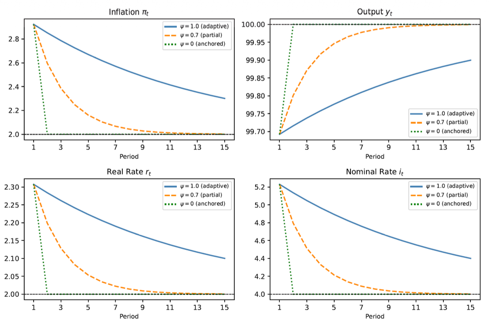

Seminar 4: Shock Analysis (continued)
Expectations & Demand Shocks — Mathematical impact of anchors and shifts.
Partially Anchored Expectations
Assume that inflation expectations follow: $$\pi_t^e - \pi^* = \psi(\pi_{t-1} - \pi^*), \quad 0 < \psi < 1$$
- Modify the DAS curve to incorporate this expectations mechanism.
- For a one-period supply shock $\nu_0 = 1$ with $\psi = 0.7$, calculate the path of inflation for periods 0, 1, and 2.
- Compare with fully adaptive expectations ($\psi = 1$). How much faster does inflation return to target?
Show Solution
We start from the standard Phillips curve: $\pi_t = \pi_t^e + \alpha(y_t - \bar{y}) + \nu_t$.
Substitute the mechanism $\pi_t^e = \pi^* + \psi(\pi_{t-1} - \pi^*)$:
Interpretation: The smaller $\psi$ is, the weaker the inflation persistence.
Assume $y_t = \bar{y}$ and $\nu_t = 0$ for $t \ge 1$. Start at $\pi_{-1} = \pi^*$.
- Period 0: $\pi_0 - \pi^* = 0.7(0) + 1 = 1 \implies \pi_0 = \pi^* + 1$
- Period 1: $\pi_1 - \pi^* = 0.7(1) + 0 = 0.7 \implies \pi_1 = \pi^* + 0.7$
- Period 2: $\pi_2 - \pi^* = 0.7(0.7) = 0.49 \implies \pi_2 = \pi^* + 0.49$
The gap shrinks geometrically: $1 \to 0.7 \to 0.49$.
With $\psi = 1$: $\pi_t - \pi^* = (\pi_{t-1} - \pi^*) + \nu_t$.
The path would be: $1 \to 1 \to 1$. Inflation does not move back toward target on its own.
Result: With $\psi = 0.7$, by period 2, 51% of the initial gap has disappeared, whereas 0% has disappeared under adaptive expectations.

Visualizing the difference in convergence speed.
Fully Anchored Expectations
Assume expectations are fully anchored: $\psi = 0 \implies \pi_t^e = \pi^*$.
- Modify DAS accordingly.
- What happens to inflation following a one-period supply shock?
- Does the central bank need to create a recession to stabilise inflation?
- Is the Taylor principle ($\theta_\pi > 0$) still necessary for stability?
- How does this relate to post-pandemic inflation dynamics?
Show Solution
Inflation no longer depends on past inflation. No intrinsic persistence.
At $t=0$, $\pi_0 - \pi^* = 1$. At $t=1$, since $\nu_1=0$ and assuming $y_1 = \bar{y}$, then $\pi_1 = \pi^*$.
Inflation returns immediately to target once the shock disappears.
No. Unlike the adaptive case, inflation is not propagated by expectations. Once the shock is gone, inflation falls back naturally without needing a forced contraction.
It remains important but is less crucial for basic stability than under backward-looking expectations, because there is no expectations-driven "spiral" to break.
Helps explain why inflation could fall back without a deep recession: long-term expectations remained anchored around targets even as headline inflation surged due to temporary supply disruptions.
One-period Demand Shock
The economy starts in equilibrium. A positive demand shock $\epsilon_0 = 2$ occurs in period 0.
- Determine the impact on $y_0, \pi_0, r_0$, and $i_0$.
- Why does output increase by less than the shock?
- Explain the mechanism connecting the shock to higher inflation.
- Show the impact graphically in the DAD-DAS diagram.
Show Solution
A positive demand shock shifts DAD right.
Output and inflation rise; the CB reacts by raising nominal and real rates.
Output rises by less than 2 because the rise in inflation triggers a CB reaction. The resulting higher real interest rate dampens spending (crowding out part of the shock).
Shock $\uparrow \implies y_0 > \bar{y} \implies$ Positive output gap $\implies$ Upward pressure on prices in the Phillips curve $\implies \pi_0 \uparrow$.
DAD shifts rightward. The economy moves upward along the stationary DAS curve.
[Graphique DAD-DAS à insérer ici lors de la correction]
Demand Shock Dynamics
Continue from Ex 3 with $\epsilon_t = 0$ for $t \ge 1$.
- What happens to output in period 1? Why does it fall below potential?
- Why does inflation remain above target in period 1?
- Trace the path of all variables for periods 1, 2, and 3.
- Why must policy remain restrictive after output returns to normal?
- Sketch the complete time paths through convergence.
Show Solution
$\epsilon_1 = 0$, but $\pi_0$ was high. The CB keeps rates high. The restrictive policy depresses demand, leading to $y_1 < \bar{y}$.
Inflation remains above target because it inherits the high level from period 0 via expectations ($\pi_1^e = \pi_0$). It only declines gradually as $y < \bar{y}$ persists.
P1: $y_1 < \bar{y}, \pi_1 > \pi^*, r_1 > r^*, i_1 > i^*$ (Recession for disinflation).
P2: Output recovers toward $\bar{y}$, $\pi$ falls toward $\pi^*$, rates ease.
P3: All variables converge closer to long-run equilibrium.
Policy must stay restrictive ($r > \rho$) to maintain the negative output gap until inflation is fully back at target. Early relaxation would let inflation remain stuck above target.

Time paths: Output undershoot followed by gradual convergence.
End of Seminar 4 — Shock Analysis. Based on materials by Mgr. Ing. Tomáš Pokorný (IES UK).